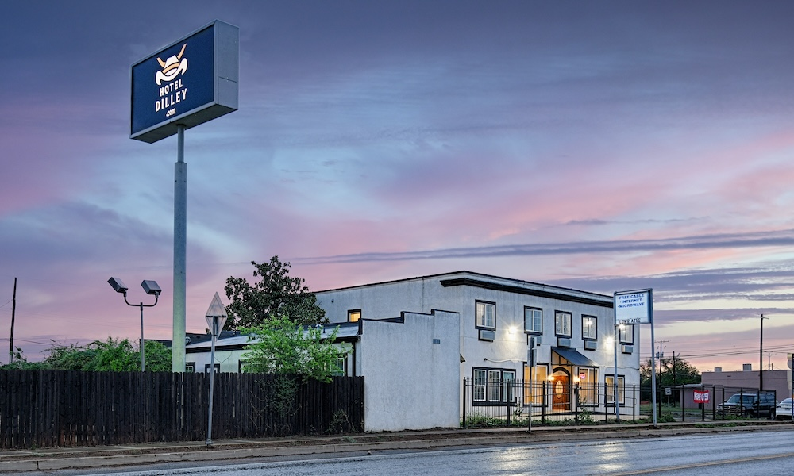
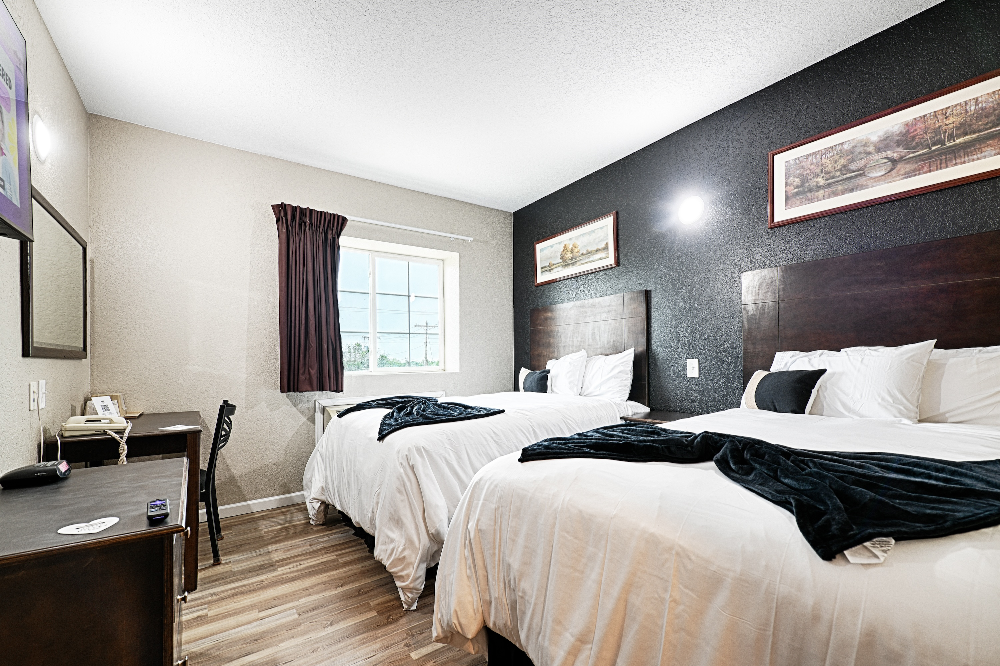
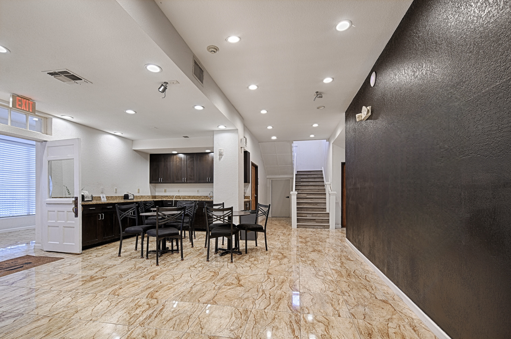

Furnished Rooms
Renovated furnished rooms are available in Dilley, Texas.
Hotel Dilley is a practical furnished-room option in Dilley for crews and workers who need flexible stay timing without guessing at a long-term setup.
Crew Housing Basics
Work assignments can move quickly. Hotel Dilley is positioned for furnished stays in Dilley where crews need a local base and the details should be confirmed directly.
Renovated furnished rooms are available in Dilley, Texas.
Flexible nightly and longer-stay options are offered for project-driven stays.
The property has an on-site manager, which can matter when workers need local support.
Crew Checklist
This page does not publish pricing, terms, or availability. It gives the exact fit questions to ask before placing workers.



Questions People Ask
Hotel Dilley is one local option to consider for renovated furnished rooms with flexible nightly and longer-stay options.
Some rooms include kitchenette facilities. Ask which room type fits the crew's needs.
This page does not publish availability. Call Hotel Dilley to discuss timing, room setup, and fit.
Call Hotel Dilley to discuss stay length, room setup, and whether kitchenette facilities are needed.